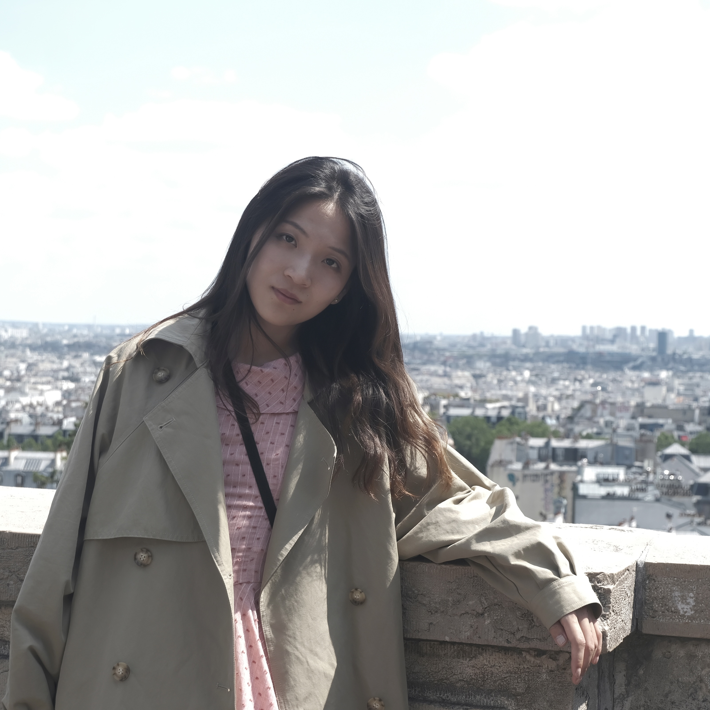
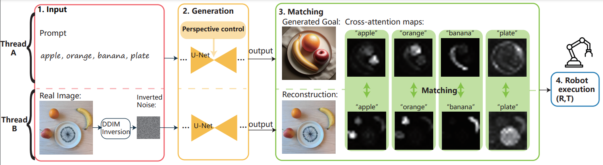
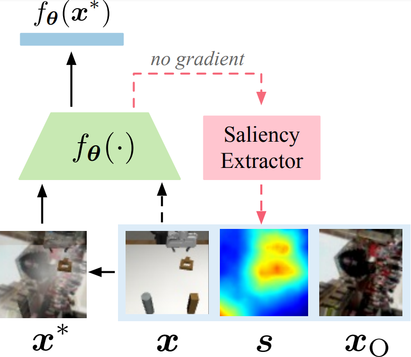
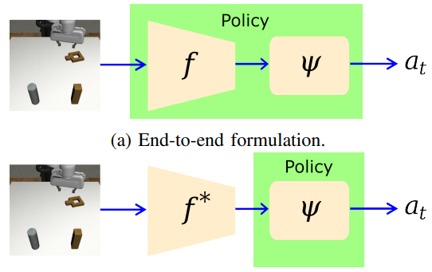
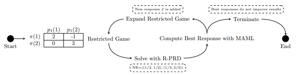
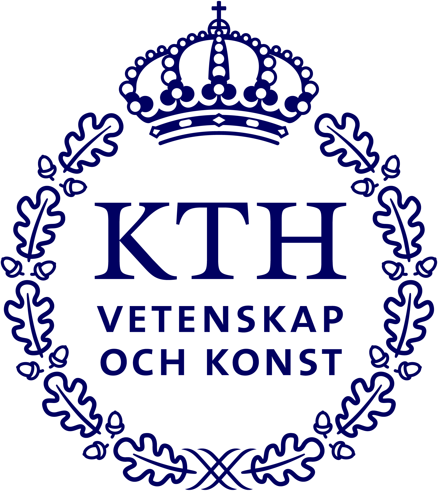

Ruiyu Wang
Second-year PhD Student
Division of Robotics, Perception, and Learning
KTH Royal Institute of Technology
Email: ruiyuw at kth dot se
Google Scholar / Linkedin / Contact
I'm a PhD student at KTH in Sweden, advised by Asso. Prof. Florian Pokorny. My research broadly covers robotic manipulation and computer vision and is funded by the CloudGripper project of WASP.
Before joining KTH, I received my M.Sc in quantitative finance from the National University of Singapore. In my free time, I climb.
Research
|  |
PACA: Perspective-Aware Cross-Attention Representation for Zero-Shot Scene Rearrangement [paper] Shutong Jin*, Ruiyu Wang*, Kuangyi Chen and Florian T. Pokorny 2025 IEEE/CVF Winter Conference on Applications of Computer Vision (WACV)
|
|  |
Enhancing Visual Domain Robustness in Behaviour Cloning via Saliency-Guided Augmentation [paper] Zheyu Zhuang, Ruiyu Wang, Nils Ingelhag, Ville Kyrki and Danica Kragic 2024 Conference on Robot Learning (CoRL)
|
|  |
Feature Extractor or Decision Maker: Rethinking the Role of Visual Encoders in Visuomotor Policies [paper] Ruiyu Wang, Zheyu Zhuang, Shutong Jin, Nils Ingelhag, Danica Kragic and Florian T. Pokorny ArXiv Preprint
|

|
RealCraft: Attention Control as A Tool for Zero-shot Consistent Video Editing [paper] Shutong Jin, Ruiyu Wang and Florian T. Pokorny ArXiv Preprint
|

|
How Physics and Background Attributes Impact Video Transformers in Robotic Manipulation: A Case Study on Planar Pushing [paper] Shutong Jin, Ruiyu Wang, Muhammad Zahid and Florian T. Pokorny 2024 IEEE/RSJ International Conference on Intelligent Robots and Systems (IROS)
|
|  |
A Game-theoretic Perspective of Generalization in Reinforcement Learning [paper] Chang Yang*, Ruiyu Wang*, Xinrun Wang and Zhen Wang 2022 Deep Reinforcement Learning Workshop NeurIPS
|
Education
|  |
2023.03 ~ Present, KTH Royal Institute of Technology, Sweden Ph.D in Electrical Engineering and Computer Science |
 |
2021.08 ~ 2023.01, National University of Singapore, Singapore M.Sc in Quantitative Finance |
|
2017.09 ~ 2021.07, Peking University, China B.Sc in Physics |
Service
| Reviewer: IEEE T-RO |
| Teaching: Artificial Intelligence (2023 Fall, 2024 Fall), Machine Learning (2023 Fall, 2024 Fall) |